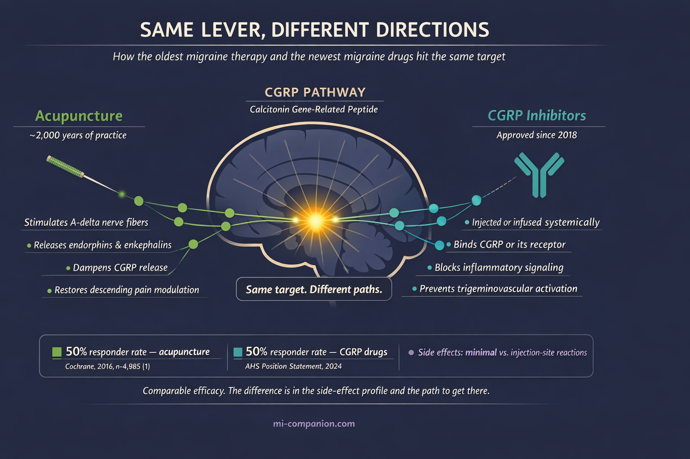

By Rustam Iuldashov
30 years lived experience with chronic migraine | Sources: 22 peer-reviewed references including Cochrane Database of Systematic Reviews (n=4,985), JAMA Internal Medicine (n=249), Systematic Reviews (n=2,295) | Last updated: March 10, 2026
Medical Review: This content is based on peer-reviewed research from Cochrane Database of Systematic Reviews, JAMA Internal Medicine, Systematic Reviews, Complementary Therapies in Clinical Practice, BMC Complementary Medicine and Therapies, Frontiers in Neurology, Frontiers in Neuroscience, Current Pain and Headache Reports, Journal of Pain Research, and Pain Research and Management.
Important Notice: This article is for informational purposes only and does not replace professional medical advice. The author is not a licensed physician or healthcare professional. Always consult your doctor before making changes to your treatment plan.
Key Takeaways
- Acupuncture is backed by moderate-quality Cochrane evidence as an effective migraine preventive, reducing about 1.5 extra migraine days per month beyond sham treatment[1]
- A JAMA trial showed 67% reduction in migraine frequency, with benefits lasting months after treatment ended[4]
- Brain imaging reveals acupuncture normalizes pain-processing networks and may reduce CGRP — the same molecule targeted by modern migraine drugs[6, 8]
- NICE and other major guidelines recommend acupuncture when standard medications fail or cause intolerable side effects[11]
- Side effects are minimal (mild bruising, temporary fatigue), with no serious adverse events across thousands of clinical trial participants[14, 15]
- Plan for 6–10 sessions over 5–8 weeks, ideally three times per week initially, then transition to maintenance[1, 3]
You know the drill. Dark room. Third migraine this week. The medication either isn’t working or is working — but the side effects feel almost as bad as the pain. Your doctor mentions acupuncture. You picture incense, crystals, maybe a gong. Ancient Chinese needles? Seriously?
Fair reaction. For decades, acupuncture lived in medicine’s grey zone — too “alternative” for neurology journals, too old for evidence-based medicine. But something shifted. A wave of rigorous clinical trials, brain imaging studies, and systematic reviews forced researchers to take a second look. The data is in now. And it’s more interesting than either side expected.
What 5,000 Patients Taught Us
The Cochrane Collaboration — the gold standard of medical evidence — analyzed 22 randomized controlled trials involving 4,985 migraine patients. Acupuncture consistently outperformed both usual care and sham (fake) acupuncture.[1]
The numbers are worth sitting with. Start with six migraine days per month. Usual care drops that to five. Sham acupuncture or a prophylactic drug brings it to four. Real acupuncture? Three and a half.[1]
Half a day per month sounds modest. Over a year, it’s six fewer days of pain — no pills, no prescriptions, no side effects to manage.
A 2025 meta-analysis of 23 RCTs (2,295 patients) confirmed these findings: acupuncture shortened individual attacks by over four hours and cut migraine days by about 1.4 per month versus sham.[2] A separate dose-response analysis of 32 trials pinpointed the sweet spot — around 16 sessions over two months produced the steepest drop, roughly four fewer attacks monthly.[3] Beyond that, benefits plateaued.
The JAMA Study That Changed the Conversation
In 2017, researchers published what remains the toughest test of acupuncture for migraine in JAMA Internal Medicine. They randomized 249 patients into three groups: true acupuncture, sham acupuncture, or a waiting list. Treatment was intensive — 20 sessions in four weeks.[4]
The true acupuncture group saw migraine frequency drop by 67% at week 16. The sham group? 42%.[4][5] That 25-point gap is hard to explain away as placebo.
But here’s what made the study remarkable. Those benefits persisted through the entire 24-week follow-up — months after the last needle.[4] Acupuncture demonstrated something most medications cannot: a durable effect that outlasts the treatment itself.
Beyond Placebo: What’s Happening Inside Your Brain
The skeptic’s reflex: It’s just placebo. Sticking needles anywhere would work equally well.
The data tells a more nuanced story. Yes, sham acupuncture carries an unusually strong placebo response — stronger than sugar pills for migraine.[1] That makes sense. The ritual involves human touch, dedicated attention, and expectation of relief. These activate real neurobiological pathways. Nobody disputes that.
But true acupuncture does something measurably different. Neuroimaging studies using fMRI show that needles placed at specific acupuncture points normalize connectivity in brain regions that malfunction during migraine.[6] By modulating the hyperexcitable brain, real acupuncture restores activity in the descending pain modulatory system — the brain’s built-in pain suppression network, which becomes dysfunctional in chronic migraine.[6][7] Sham acupuncture does not produce these same targeted changes.
At the molecular level, acupuncture triggers release of endorphins and enkephalins, your body’s natural painkillers.[8] It dampens CGRP — calcitonin gene-related peptide — the very molecule that modern drugs are designed to block, a breakthrough often called the CGRP revolution.[8][9] The newest migraine medications and the oldest migraine therapy appear to pull the same neurological lever. Just from different directions.
Acupuncture also quiets neurogenic inflammation (the inflammatory cascade in the trigeminal nerve system that drives migraine pain).[8] And a 2023 meta-analysis of 1,766 patients found that it significantly reduced anxiety and depression in migraine sufferers — providing a vagus nerve hack of sorts by calming the autonomic nervous system.[10]

What the Guidelines Actually Say
This is what matters at your next appointment. Major clinical bodies now include acupuncture as a recognized option:
The UK’s NICE recommends considering up to 10 acupuncture sessions over 5–8 weeks when first-line medications — propranolol, topiramate, amitriptyline — have failed or aren’t tolerated.[11] The American Academy of Neurology includes acupuncture among complementary approaches with evidence for migraine prevention.[12] And a recent AHS draft guideline lists acupuncture alongside behavioral interventions as non-pharmacological strategies with potential to reduce attack frequency.[13]
This is no longer fringe medicine. It’s in the guidelines, in black and white.
The Safety Advantage
Here’s where acupuncture quietly wins the argument. A network meta-analysis of 39 RCTs (4,379 patients) found that every reported adverse effect was mild and transient — occasional fatigue, minor bruising, temporary soreness at needle sites.[14] Across thousands of patients, not a single serious adverse event.[14][15]
Compare that with the preventive medications many of us know too well. Topiramate can fog your thinking and numb your fingertips. Beta-blockers drag your energy through the floor. Antidepressants dry your mouth and blur your sleep. Even established treatments like Botox for migraine, while effective, involve a higher pharmacological and cost threshold than acupuncture.
An overview of 15 systematic reviews found that six of eight safety analyses concluded acupuncture had significantly fewer adverse events than medication.[16] For anyone who has cycled through multiple preventive drugs with intolerable side effects — and after 30 years, I’ve been that person — this is not a footnote. It’s the headline.
⚠️ When to Seek Emergency Help
Any new headache that is sudden, severe, and unlike anything you’ve experienced before — especially with fever, stiff neck, confusion, vision changes, or one-sided weakness — demands emergency care immediately. Do not use acupuncture or any other therapy to self-treat potentially dangerous symptoms.
Call your local emergency number.
What to Actually Expect
If you decide to try acupuncture, the research offers a clear roadmap:
- Commit to the course. The Cochrane review found meaningful benefit only after at least six sessions.[1] Most successful trials used 10–20 sessions over 4–8 weeks. One visit tells you nothing.
- Front-load your sessions. Dose-response data suggests three sessions per week during the first month produces the steepest improvement, with diminishing returns beyond two months.[3] After the initial course, many patients shift to monthly maintenance.
- Choose your practitioner carefully. Look for licensed acupuncturists with specific training in headache or pain. In many countries, physicians can practice acupuncture with additional certification. Ask about their migraine caseload — experience matters.
- Track everything. Use a migraine diary or app to record frequency, duration, and severity before, during, and after treatment. Give it 8–12 weeks before judging. That’s the same evaluation window neurologists use for any preventive therapy.
- Think addition, not replacement. The strongest evidence supports acupuncture as one layer in a comprehensive plan — alongside medication, biofeedback, lifestyle changes, and trigger awareness. It enhances. It doesn’t substitute.
The Honest Bottom Line
Acupuncture for migraine is neither miracle nor myth. The evidence shows a modest but real benefit beyond placebo — comparable to standard preventive drugs but with dramatically fewer side effects. The strongest data supports episodic migraine prevention, and the effects appear to persist months after treatment ends.
It won’t work for everyone. The Cochrane data: 50% of people receiving acupuncture saw their headache frequency halved. With sham acupuncture, 41%. With usual care alone, 17%.[1] Those are honest numbers. Better than doing nothing. Better than placebo. About as effective as medication — minus the medication’s cost to your body.
After 30 years with migraine, I’ve stopped looking for the single answer. The best treatment is the one that works for you. For some, that’s a CGRP inhibitor. For others, a course of acupuncture. For many — and increasingly the evidence supports this — it’s both. Inclusion of alternative therapies in your migraine toolkit can provide a sense of agency that pills alone often can't. The needles are ancient. The evidence is modern. The choice is yours.
⚕️ Important Medical Disclaimer
This article is for informational and educational purposes only and does not constitute medical advice, diagnosis, or treatment. The author, Rustam Iuldashov, is not a licensed physician, neurologist, or healthcare professional. He is a patient advocate with 30 years of personal experience living with chronic migraine.
All clinical claims in this article are sourced from peer-reviewed research published in indexed medical journals. Study designs and sample sizes are noted where applicable.
Always consult a qualified healthcare provider for questions about your individual health, migraine treatment, or medication decisions.
Acupuncture should be performed only by licensed, trained practitioners. Do not attempt self-needling or delay necessary medical treatment in favor of complementary therapies. People taking blood thinners or with bleeding disorders should discuss acupuncture safety with their physician. This content was last reviewed for accuracy on March 10, 2026.
References
- Linde K, Allais G, Brinkhaus B, et al. “Acupuncture for the prevention of episodic migraine.” Cochrane Database of Systematic Reviews, Issue 6 (2016). doi:10.1002/14651858.CD001218.pub3. Study design: Systematic review / Meta-analysis. n=4,985 (22 RCTs).
- “Acupuncture improves migraine and quality of life in patients with migraine: a systematic review with meta-analysis.” Systematic Reviews (2025). doi:10.1186/s13643-025-02977-y. Study design: Systematic review / Meta-analysis. n=2,295 (23 RCTs).
- “Acupuncture for migraine: A systematic review and meta-regression of randomized controlled trials.” Complementary Therapies in Clinical Practice (2024). doi:10.1016/j.ctcp.2024.101845. Study design: Systematic review / Meta-regression. n=1,562 (32 RCTs).
- Zhao L, Chen J, Li Y, et al. “The Long-term Effect of Acupuncture for Migraine Prophylaxis: A Randomized Clinical Trial.” JAMA Internal Medicine, 177(4):508–515 (2017). doi:10.1001/jamainternmed.2016.9378. Study design: RCT. n=249.
- Ee C. “Editorial on ‘The long-term effect of acupuncture for migraine prophylaxis.’” AME Medical Journal, 2:54 (2017). doi:10.21037/amj.2017.04.05. Study design: Editorial / Commentary.
- Chang CM, Yang CP. “Evidence of Potential Mechanisms of Acupuncture from Functional MRI Data for Migraine Prophylaxis.” Current Pain and Headache Reports, 25(7):52 (2021). doi:10.1007/s11916-021-00961-4. Study design: Systematic review (neuroimaging).
- “Therapeutic applications and potential mechanisms of acupuncture in migraine: A literature review and perspectives.” Frontiers in Neuroscience, 16:1022455 (2022). doi:10.3389/fnins.2022.1022455. Study design: Literature review.
- Mechanism data synthesized from refs [6], [7], and preclinical studies cited therein — endorphin release, CGRP modulation, neurogenic inflammation suppression.
- “Acupuncture for migraine: a literature review of neuroimaging studies.” Frontiers in Neurology, 16:1601554 (2025). doi:10.3389/fneur.2025.1601554. Study design: Systematic review (neuroimaging). n=40 studies (514 migraine patients).
- Li Z, Feng J, Yin S, et al. “Effects of acupuncture on mental health of migraine patients: a systematic review and meta-analysis.” BMC Complementary Medicine and Therapies, 23(1):278 (2023). doi:10.1186/s12906-023-04103-8. Study design: Systematic review / Meta-analysis. n=1,766 (13 RCTs).
- National Institute for Health and Care Excellence (NICE). “Headaches in over 12s: diagnosis and management.” NICE guideline CG150, updated June 2025. Study design: Clinical guideline.
- American Academy of Neurology (AAN). “Update: Pharmacologic Treatment for Episodic Migraine Prevention in Adults.” (2012, with updates). Study design: Clinical guideline.
- American Academy of Neurology (AAN). Draft Guideline: “Pharmacologic Treatment for Migraine Prevention in Adults” (2024 draft). Study design: Clinical guideline (draft).
- “Comparative efficacy of acupuncture-related therapy for migraine: A systematic review and network meta-analysis.” Frontiers in Neurology, 13:1010410 (2022). doi:10.3389/fneur.2022.1010410. Study design: Network meta-analysis. n=4,379 (39 RCTs).
- Liu Y, Wang Y, Mi C, et al. “Efficacy of Acupuncture-Related Therapy for Migraine: A Systematic Review and Network Meta-Analysis.” Journal of Pain Research, 17:1107–1132 (2024). doi:10.2147/JPR.S452971. Study design: Network meta-analysis. n=3,365 (34 studies).
- Li YX, Xiao XL, Zhong DL, et al. “Effectiveness and Safety of Acupuncture for Migraine: An Overview of Systematic Reviews.” Pain Research and Management, 2020:3825617 (2020). doi:10.1155/2020/3825617. Study design: Overview of systematic reviews. n=15 SRs.
- Liu AR, Zhu Q, Li J, et al. “Efficacy of Acupuncture and Pharmacotherapy for Migraine Prophylaxis: A Systematic Review and Meta-Analysis.” Journal of Pain Research (2025). doi:10.2147/JPR.S517819. Study design: Systematic review / Meta-analysis.
- Shi H, Miao R, Gao S, et al. “The durable effect of acupuncture for episodic migraine: a systematic review and meta-analysis.” Frontiers in Neuroscience, 17:1211438 (2023). doi:10.3389/fnins.2023.1211438. Study design: Systematic review / Meta-analysis.
- Linde K, Allais G, Brinkhaus B, et al. “Acupuncture for the prevention of episodic migraine.” Cochrane Database of Systematic Reviews (protocol update 2025). doi:10.1002/14651858.CD001218.pub4. Study design: Cochrane protocol.
- Zhang N, Houle T, Hindiyeh N, Aurora SK. “Systematic review: acupuncture vs standard pharmacological therapy for migraine prevention.” Headache, 60:309–317 (2020). doi:10.1111/head.13723. Study design: Systematic review.
- Wang Y, Du R, Cui H, et al. “Acupuncture for acute migraine attacks in adults: a systematic review and meta-analysis.” BMJ Evidence-Based Medicine, 28(4):228–240 (2023). doi:10.1136/bmjebm-2022-112102. Study design: Systematic review / Meta-analysis.
- Qi et al. “Acupuncture on migraine: an ALE meta-analysis.” Quantitative Imaging in Medicine and Surgery (2025). Study design: ALE meta-analysis (neuroimaging). n=514 patients, 163 controls.

How We Create Content
- Peer-reviewed sources only. Cochrane Database of Systematic Reviews, JAMA Internal Medicine, Systematic Reviews, Complementary Therapies in Clinical Practice, BMC Complementary Medicine and Therapies, Frontiers in Neurology, Frontiers in Neuroscience, Current Pain and Headache Reports, Journal of Pain Research, Pain Research and Management, BMJ Evidence-Based Medicine, Headache.
- Study transparency. Study design and sample sizes noted for all clinical references.
- Source verification. All claims backed by numbered references with DOI links.
- Experience + Science. 30 years personal migraine experience combined with peer-reviewed evidence.
- Regular updates. Articles reviewed when significant new research emerges.
- No conflicts of interest. No funding from acupuncture clinics, traditional Chinese medicine companies, or pharmaceutical firms.
Track What Works. See What Changes.
Migraine Companion helps you log treatments — including acupuncture sessions — alongside your attacks, triggers, and lifestyle factors. Discover your patterns over time.
Last reviewed: March 2026
Next scheduled review: September 2026